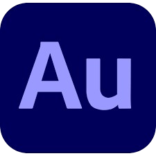

Intro
안녕하세요, 강준석입니다.
1997. 03. 18rkdwnstjr155@gmail.com
작은 차이가 명품을 만드는 그런 영상을 만들고자 합니다.
좋은 영상이란 무엇인가? 시청자들이 편안하게 볼 수 있고 공감 혹은 재미를 느낄 수 있는 그런 영상이 아닐까 생각합니다. 그럼 좋은 영상은 어떻게 만들어지는가? 자연스러운 효과와 화면 전환, 편안하게 들리는 사운드의 조화를 통해 이루어지는 것이라 생각합니다. 사소하지만 작은 차이가 명품을 만들어 내는 그런 영상을 만들고자 노력하는 편집자입니다.
성장하고자 하는 욕구가 강합니다
어제의 나보다 오늘이 낫고, 내일의 내가 기대되는 하루하루 끊임없이 성장하고자 하는 내가 되기 위해 노력하는 편집자입니다. 머리로만 생각하기 보단, 실행을 통해 목표에 부딪히며 해결책을 찾아내는 방식을 선호합니다. 저의 목표는 현실에 안주하지않고 과거에 만족하지않는 편집자입니다.
주요 기술
애프터이펙트
오디션
경력
들마을 어린이집
2021. 03 ~ 2024. 10
영상 편집 공부
2024. 04 ~
Youtube 근기삼촌 촬영 및 편집
2025. 02 ~ 2025. 03
학력
계명문화대학교 아동보육과
2016. 03 ~ 2021. 02